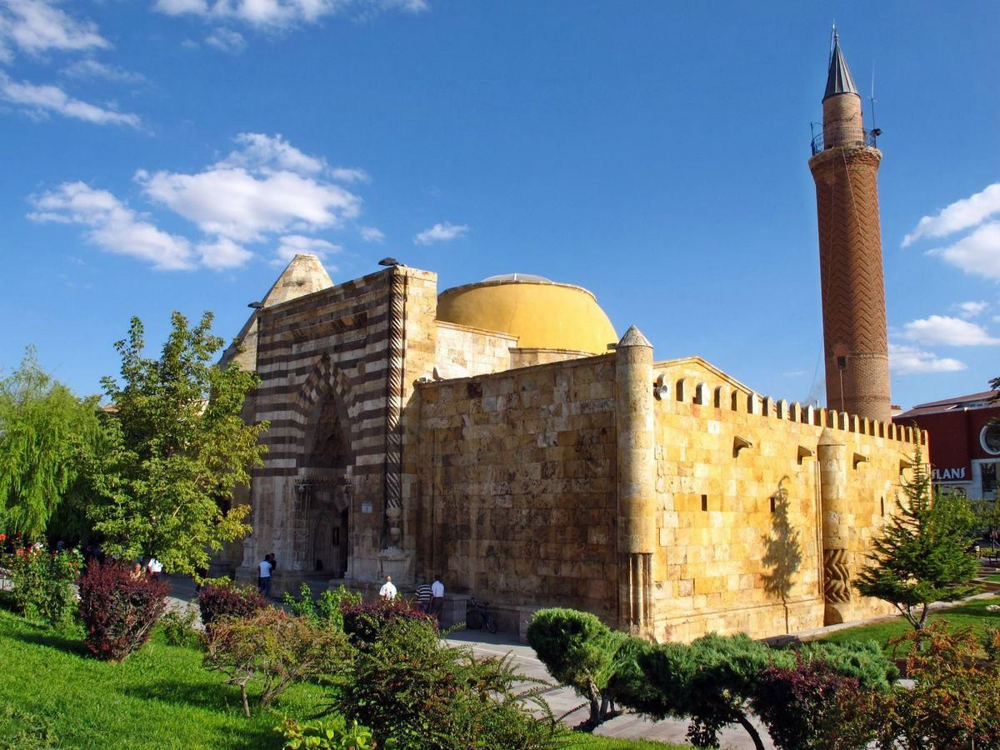

Astronomi
Cacabey Medresesi
13. Yüzyılda Anadolu Selçuklu döneminde Emir Nurettin Cibril bin Caca tarafından yaptırılmıştır. Hem medrese hem de rasathane olarak kullanılan yapı, özellikle astronomi eğitimi ile öne çıkmıştır. Kesme taştan yapılan mimarisi, yüksek taç kapısı ve minaresiyle Selçuklu sanatının eşsiz bir örneğidir.